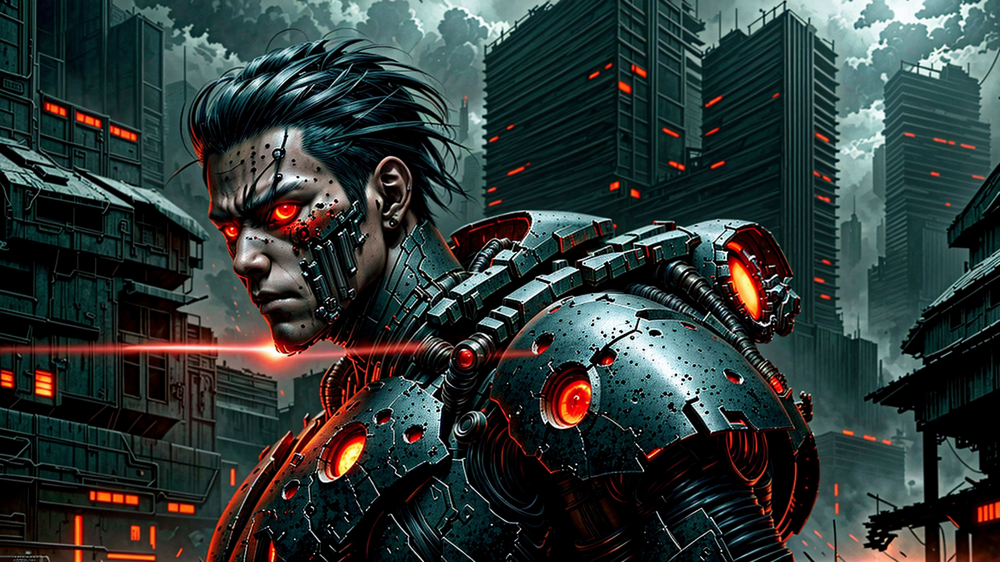
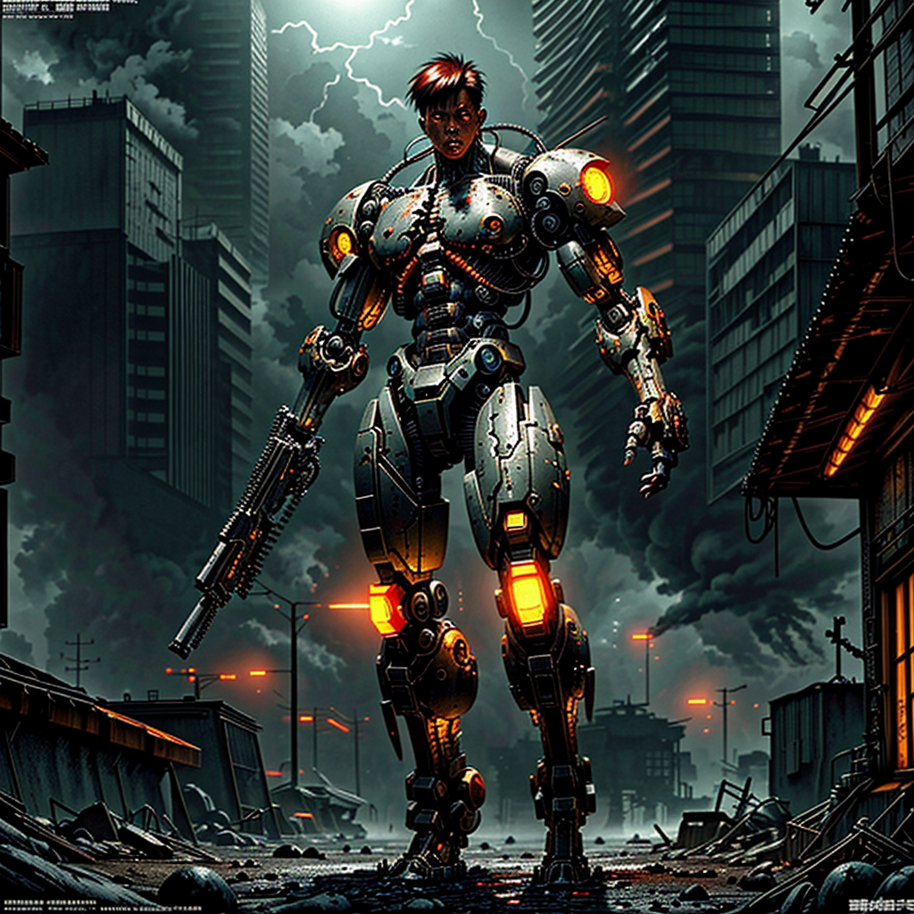

Mechheads
Eine düstere und bedrohliche Atmosphäre.
Der Künstler hat eine Welt erschaffen, in der Technologie und menschliche Elemente zu einer beängstigenden Synthese verschmolzen sind. Der Himmel ist von dichten, düsteren Wolken bedeckt, die nur wenig Licht durchlassen und die Szenerie in eine kalte, unheimliche Dunkelheit tauchen.
Im Vordergrund steht eine kybernetische Figur, die stark bewaffnet und kampfbereit wirkt. Die leuchtend roten Augen und die orangefarbenen Lichter an seiner Rüstung verstärken den Eindruck von Gefahr und Aggression. Diese Figur scheint der Inbegriff einer mechanisierten Zukunft zu sein, in der Menschlichkeit und Technologie untrennbar miteinander verbunden sind.
Der Hintergrund ist geprägt von hohen, dunklen Gebäuden, deren Fenster in einem unheimlichen Rot glühen. Diese leuchtenden Punkte erzeugen das Gefühl, dass die Stadt unter ständiger Überwachung steht und kein Ort für Zuflucht oder Sicherheit ist. Rauch und Dunst steigen von den Ruinen und Trümmern am Boden auf, was die Vorstellung einer kürzlich stattgefundenen oder andauernden Zerstörung nahelegt.
Die gesamte Komposition wirkt kalt und unnachgiebig, als ob die Menschlichkeit in dieser Welt verloren gegangen ist. Die starren, mechanischen Formen und die intensive Farbpalette vermitteln ein Gefühl der Unentrinnbarkeit und des Schicksals. Die Figur im Vordergrund scheint der letzte Verteidiger oder vielleicht der Vollstrecker in dieser feindseligen Umgebung zu sein.
Es gibt ein starkes Gefühl von Isolation und Entfremdung, als ob die Menschen in dieser Welt nur noch Überbleibsel einer vergangenen Ära sind, die von Maschinen dominiert wird. Die Szene ist ein eindrucksvolles Beispiel für Cyberpunk-Ästhetik, die das Zusammenspiel von fortschrittlicher Technologie und dystopischen Gesellschaftsstrukturen darstellt.
Insgesamt erzeugt das Bild eine Atmosphäre der Beklommenheit und des Unbehagens, aber auch der Faszination für eine mögliche Zukunft, in der die Grenzen zwischen Mensch und Maschine verschwimmen. Der Künstler hat eine visuelle Erzählung geschaffen, die sowohl abschreckend als auch anziehend ist und den Betrachter in eine Welt voller Konflikte und Ungewissheit zieht.
Alle Personen, Maschinen und Kullisen sind fiktiv. Alle Bilder sind KI generiert.
Der Künstler hat eine Welt erschaffen, in der Technologie und menschliche Elemente zu einer beängstigenden Synthese verschmolzen sind. Der Himmel ist von dichten, düsteren Wolken bedeckt, die nur wenig Licht durchlassen und die Szenerie in eine kalte, unheimliche Dunkelheit tauchen.
Im Vordergrund steht eine kybernetische Figur, die stark bewaffnet und kampfbereit wirkt. Die leuchtend roten Augen und die orangefarbenen Lichter an seiner Rüstung verstärken den Eindruck von Gefahr und Aggression. Diese Figur scheint der Inbegriff einer mechanisierten Zukunft zu sein, in der Menschlichkeit und Technologie untrennbar miteinander verbunden sind.
Der Hintergrund ist geprägt von hohen, dunklen Gebäuden, deren Fenster in einem unheimlichen Rot glühen. Diese leuchtenden Punkte erzeugen das Gefühl, dass die Stadt unter ständiger Überwachung steht und kein Ort für Zuflucht oder Sicherheit ist. Rauch und Dunst steigen von den Ruinen und Trümmern am Boden auf, was die Vorstellung einer kürzlich stattgefundenen oder andauernden Zerstörung nahelegt.
Die gesamte Komposition wirkt kalt und unnachgiebig, als ob die Menschlichkeit in dieser Welt verloren gegangen ist. Die starren, mechanischen Formen und die intensive Farbpalette vermitteln ein Gefühl der Unentrinnbarkeit und des Schicksals. Die Figur im Vordergrund scheint der letzte Verteidiger oder vielleicht der Vollstrecker in dieser feindseligen Umgebung zu sein.
Es gibt ein starkes Gefühl von Isolation und Entfremdung, als ob die Menschen in dieser Welt nur noch Überbleibsel einer vergangenen Ära sind, die von Maschinen dominiert wird. Die Szene ist ein eindrucksvolles Beispiel für Cyberpunk-Ästhetik, die das Zusammenspiel von fortschrittlicher Technologie und dystopischen Gesellschaftsstrukturen darstellt.
Insgesamt erzeugt das Bild eine Atmosphäre der Beklommenheit und des Unbehagens, aber auch der Faszination für eine mögliche Zukunft, in der die Grenzen zwischen Mensch und Maschine verschwimmen. Der Künstler hat eine visuelle Erzählung geschaffen, die sowohl abschreckend als auch anziehend ist und den Betrachter in eine Welt voller Konflikte und Ungewissheit zieht.
Alle Personen, Maschinen und Kullisen sind fiktiv. Alle Bilder sind KI generiert.



